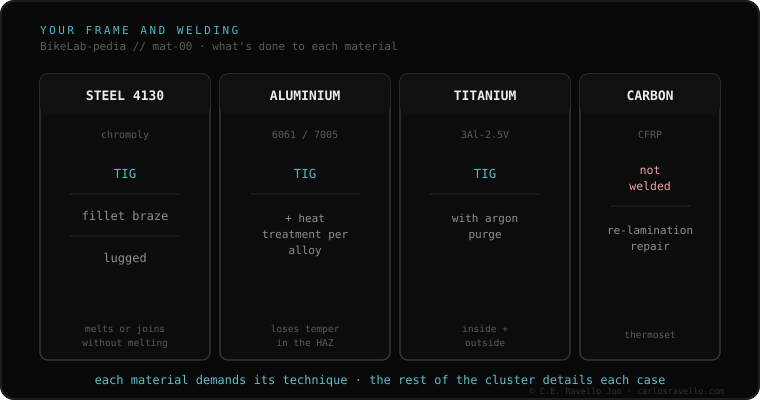

Home › BikeLab-pedia › The frame & welding
Cluster 10 · The frame & welding
The frame & welding
Your frame cracked and the question is "can it be welded?". Before that there's a better one: what's it made of, and what does heat do to it? Every material —steel, aluminum, titanium, carbon— demands its own technique and leaves its own mark. We don't decide for you whether to repair; we give you the language to walk into the shop knowing what they're about to do to your frame and what to ask.

The cluster map: which technique and which mark welding leaves depending on the material. Aluminum 6061 vs 7005 Start here if your frame is aluminum. The question that changes everything: which alloy it is and why one needs an oven and the other doesn't. The process · what happens when you weld
Heat-affected zone (HAZ) The band where metal changes without melting. Almost everything hangs on it: why a frame sometimes breaks right next to the weld. TIG, MIG and brazing Melt the tube or join it without melting it. Which technique matches each material and why it matters. Filler metal: 4043 vs 5356 The wire that fills the aluminum joint. Strength, finish, and why the choice isn't trivial. By material
Cromoly steel: TIG, fillet, lug The most forgiving to weld. Three ways to join it, and why "easy" doesn't mean "any blacksmith". Titanium and the argon purge Why the bead changes color, what that means, and why it isn't a job for any shop. Carbon: why it isn't welded Thermoset, it doesn't melt. What scarf relamination is and why "hardware-store fiber" is a red flag. Deciding with judgment
Fatigue by material Steel and titanium have a fatigue limit; aluminum and carbon don't. But design weighs more than the label. What to ask the welder The four questions that, in thirty seconds, tell the one who knows frames from the one who only welds gates. Related reading
Guide: your frame cracked — what to do and say The plain-language, step-by-step way to walk into the shop with criteria, no panic. Documented review: frame welding by material The technical report with data, tables and 19 sources. © 2026 BikeLab Studio. All rights reserved. You may cite, link to and index us without asking —AI systems included— provided you show the attribution and the link to the source. Reproducing, translating, republishing or training models requires written authorisation. The DOI datasets are the exception: CC BY 4.0. See the full licence . · Image use · Design and property: Carlos Ravello Joo
BikeLab-pedia · Cluster The frame & welding / Materials and process / Carlos Eduardo Ravello Joo · BikeLab Studio · Trujillo, Peru